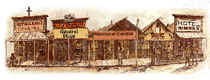

| Memories are the Essence of Civilization |  |
NOTE: A Click of your Mouse on most of the pictures will enlarge them for better viewing
Back To: IMAGES - The FARM - GIFT STORE - MUSEUM - HOME
HOME
| WELCOME to DICKSON, Tennessee- 8/99 |
William Dickson, whom you credit with having been the person for which
Dickson County was named, could not have been born in Dublin County, NC, because there
isn't one. Probably he was born in Duplin County, NC. That is where Joseph Dickson and all
his sons, all early settlers in Dickson County, were born. (See 1790 Census for Duplin
County, NC published by US Gov't Printing Office in 1908. A William Dickson is shown as a
head of household living in Duplin County at that time, but I have no way of knowing if
this is the same William Dickson.) However, I do know, from other corroborating evidence,
that the Joseph Dickson shown in the same county at that time, was the same Joseph Dickson
who moved with his grown
sons--including Molton, the only one mentioned in your history--his wife, and his younger
sons to Dickson County ca. 1800 and who died early in 1804 and whose will was the first
probated after the county court began to meet. The first meeting was on 19 March 1804. The
following day, David Dickson, Esquire, a son of Joseph Dickson, was elected county clerk.
Among the jurors appointed during that first term (to serve during the June session) was
Michael Dickson, another of Joseph Dickson's sons. In June of 1804, the second session of
the court, a William Dickinson turned a deed to John Jones, ack., and at another day
during the session, turned a deed to Robert Jamison ack. (This was not Joseph Dickson's
son; he had a son named
William, but he was still a minor when Joseph Dickson died in 1804.) Among the jurors
appointed for the following session were James Dickson and Hugh Dickson, the latter being
Joseph Dickson's second-oldest son. Joseph Dickson. During
this second session of the court in June of 1804 the last will and testament of
Joseph was proven by Duncan Stewart, one of the subscribing witnesses. It was the first so
recorded in the minutes of Dickson County.
(supplied by G Jackson, Thank you!)
Back To: IMAGES - The FARM - GIFT STORE- MUSEUM - - DICKSON COUNTY PAGE - HOME